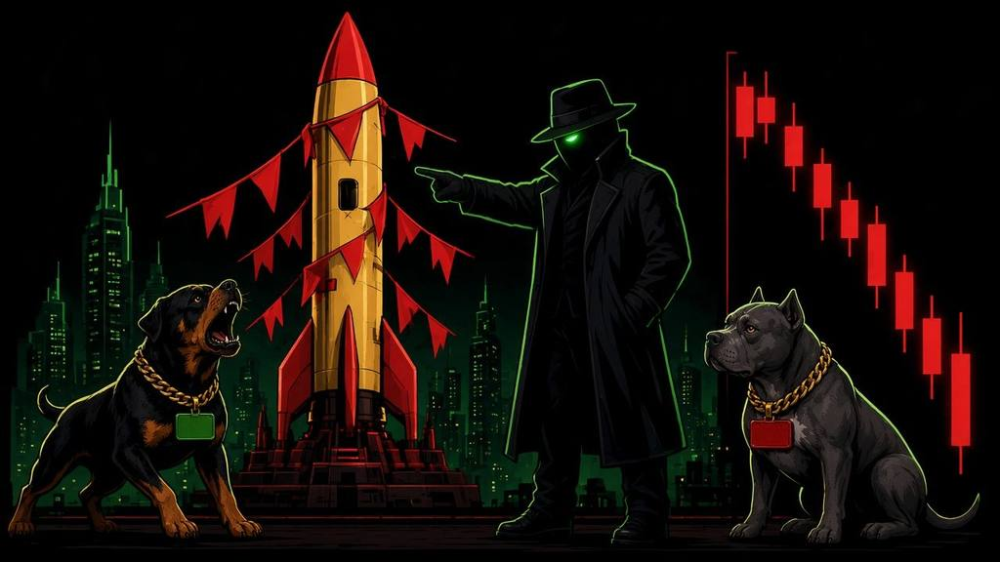

GUIDE
Launchpads make it easy to launch, and easy to rug. These are the patterns behind most entries in our Scam DB.
NFA/DYOR

The same wallet launching again and again is the biggest tell. One deployer in our DB (DD-002) launched ~120 tokens in 12 hours, about one every 5 minutes, including a fake Danxx Dogs token. Before you buy, open the deployer on Blockscout and check its history, then check our Ledger of deployers that relaunched after removing LP.
If the deployer adds all the liquidity and it isn't locked, it can be removed in one transaction.
A paid DEX boost or a wave of raid replies is not proof a project is bad, but it often comes right before the dump. On the community side, watch for "I have ideas to bring in holders" pitches that always move to DMs. See Pitch Patrol case #1.
Fake "claim" or "allocation" posts reuse a real token's CA to look legit, then ask you to connect your wallet to "check eligibility". In October we saw this with fake "TORCH claim" posts. There was no claim. Don't connect, don't sign.
DexScreener can show liquidity that isn't really in the pool. Fake Torch (DD-006) showed $1,189,925 against about $7 of real WETH. Always check the pool on Blockscout.
Join the Dip Club on Telegram and type /sniff 0x… with the full contract address on the same line. @DanxxDogsSniffBot replies "Sniffing" right away, and the deep check follows. A sniff is a set of public-data flags, not a safety label. NFA/DYOR.
Already flagged? Check the Scam DB and the Ledger of repeat deployers.
A deployer with a history of launching and abandoning tokens, especially if it also controls the LP. Check it on Blockscout and in our Ledger.
No. These are patterns, not verdicts. A token can show none of them and still fail, or show one and be fine. NFA/DYOR.
Many wallets, usually controlled by one person, buying a big share of supply in the launch block so they can dump on later buyers.
No. The Danxx Dogs token is not launched yet. Any CA claiming to be it is fake.